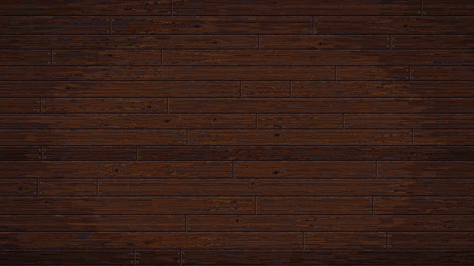
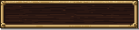
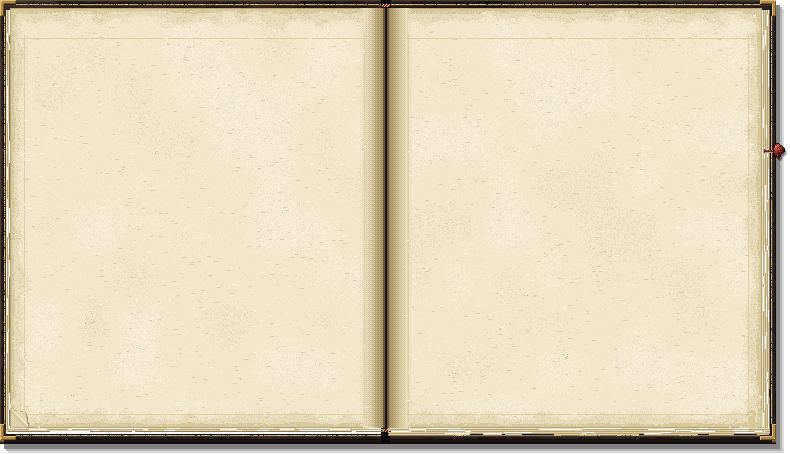
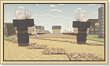
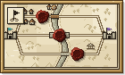
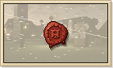

Back a page
I · The Road North The River Road
 Maud
A living hand for the crown, so the dead can rest.
Maud
A living hand for the crown, so the dead can rest.

Stage Order on the Crossings Read
Battle The Training Field Enter
Play
Enter
Play

Stage The North Crossing Sealed until the battle is won.